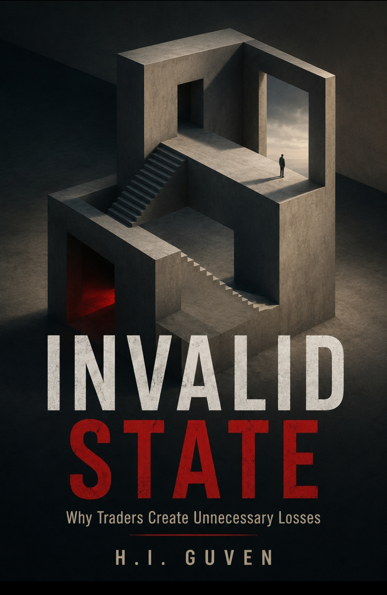

KNOWLEDGE BASE :: CORPUS & COMMERCIAL SHOWCASE
BİLGİ TABANI :: KÜLLİYAT VE TİCARİ GÖSTERİM
Research Library & Structural Corpus Araştırma Kütüphanesi ve Yapısal Külliyat
Time is not what you think. Zaman, zannettiğin şey değil.

Structural Depth: Reality, Time, Information, and Organization
YAPISAL DERİNLİK: Gerçeklik, Zaman, Bilgi ve Organizasyon
Ω: Native TR | Θ: Kernel Axiom
A comprehensive study seeking answers to existence within a single structural framework.
Reality, time, entropy, evolution, information, and consciousness are examined as manifestations of the same fundamental structural principle rather than independent problems.
Represents the theoretical synthesis of 17 independent DOI-indexed research papers.
Bir şeyin var olması onu açıklamaz. Asıl soru şudur: Neden hâlâ var?
YAPISAL DERİNLİK, bu sorulara tek bir yapısal çerçeve içinde cevap arayan kapsamlı bir incelemedir.
Bu eser, yazarın DOI indeksli 17 bağımsız araştırma çalışmasından oluşan daha geniş bir araştırma programının teorik sentezini temsil etmektedir.

The Place of Time: Time as Structural Depth
Zamanın Yeri: Yapısal Derinlik Olarak Zaman
Ω: Undefined | Θ: Absolute
Time is not flowing. You are not measuring time; you are measuring structural depth.
This book removes time from the clock and places it into the system architecture.
Time is not a flow; it is the derivative consequence of layered structure.
Zaman akmıyor. Ölçtüğünüz şey zaman değil, yapısal derinliktir.
Bu kitap, zamanı saatten söküp sistemin mimarisine yerleştirir.
Zaman bir akış değil, katmanlaşmış yapının türevsel sonucudur.

The Condensation Point: Debt, Energy, and the Narrowing of Global Coordination (2026–2035)
Yoğunlaşma Noktası: Borç, Enerji ve Küresel Koordinasyonun Daralması (2026–2035)
Ω: Observable | Θ: Emerging
The world is not collapsing. It is condensing.
Examines the structural limits shaping the global economy between 2026 and 2035.
Maps arithmetic and physical constraints that narrowing coordination: debt sustainability, energy return, and trust.
Dünya çökmüyor, yoğunlaşıyor.
2026–2035 yılları arasında küresel ekonomiyi şekillendiren yapısal sınırları inceler.
Kriz kehaneti değil; borç sürdürülebilirliği, enerji getirisi ve kurumsal güven eşiklerini haritalandıran yapısal bir çerçevedir.

Liquidation: The Market Alchemy Framework
Tasfiye: Market Alchemy Çerçevesi
Ω: Suppressed | Θ: Increasing
Modern economic order was built on growth assumptions.
When debt grows exponentially while physical production hits limits, systems realign.
Demonstrates that economic systems rely on energy, complexity, and trust rather than mere finance.
Modern ekonomik düzen büyüme varsayımı üzerine kuruldu.
Borç üstel büyürken reel üretim fiziksel sınırlara tabidir.
Tasfiye, ekonomik sistemlerin finansal değil; enerji, karmaşıklık ve güven üzerine kurulu olduğunu gösteren bir analizdir.

INVALID STATE: Why Traders Create Unnecessary Losses
GEÇERSİZ DURUM: Yatırımcılar Neden Gereksiz Kayıplar Üretir?
Ω: Collapsed | Θ: Strict Barrier
Most traders don't lose because of the market; they trade from an invalid state.
Explores the hidden conditions before every trade.
The trade is not the decision; the decision comes first. Stop improving your entries, start improving your state.
Poizsyonlar değil, zihinsel ve yapısal durumlar kaybeder.
Piyasa katılımcıları geçerli yapısal kısıtların dışında işlem yaptığında oluşan icra düzeyindeki kırılmaları ve karardan önce gelen yapısal hazırlığı inceler.
The Shape of Absence: Love, Loss, and the Mystery of What Remains
Yokluğun Şekli / Zahide: Sevgi, Kayıp ve Kalanın Gizemi
Ω: Terminal | Θ: Unified Field
Explores change, what survives loss, and how meaning emerges through relationship within systemic boundaries.
Bridges abstract philosophical theory with the profound concrete realities of human existence and containment.
"Bir şeyin var olması, neden var olduğunu açıklamaz."
Newton, Einstein, Leibniz, Darwin ve Schrödinger gibi zihinlerin buluştuğu zamansız bir salonda;
saf soyut kuramlar ile somut yaşamın, yitirilen bir canlının ardında bıraktığı izlerin ve containment kavramının kesişim noktası.